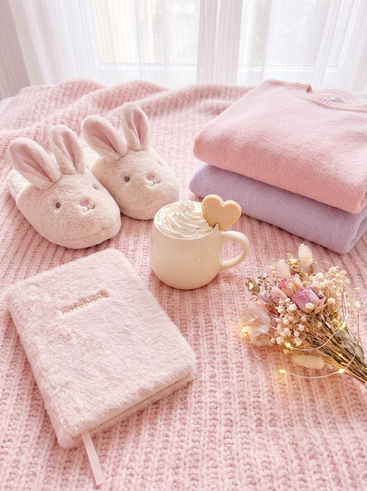
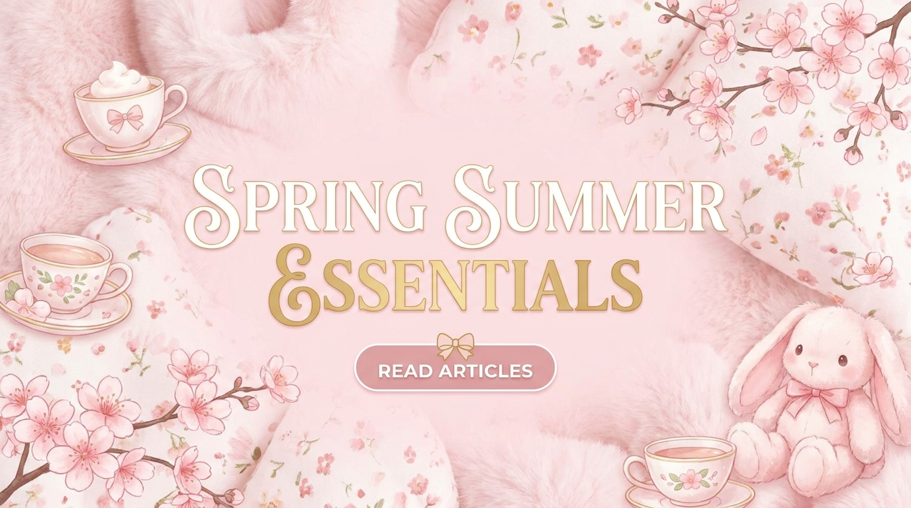
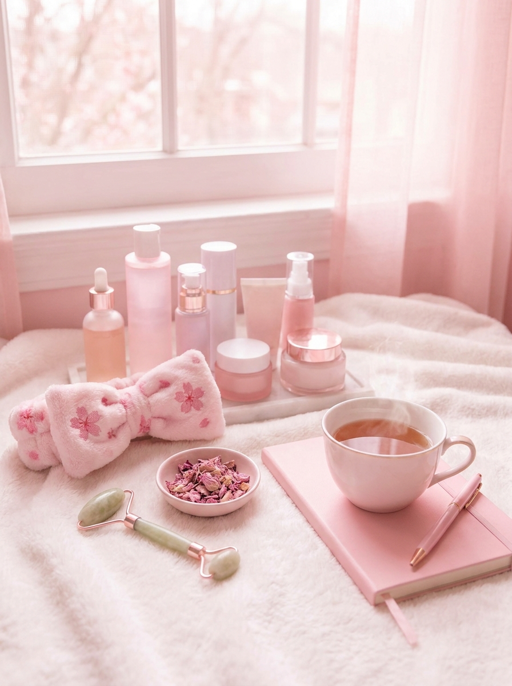
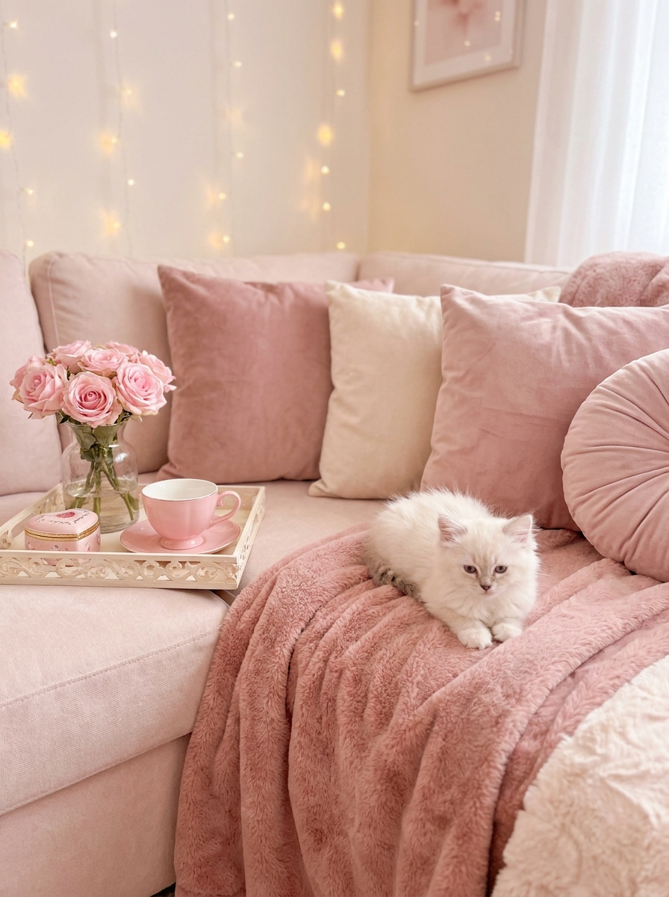
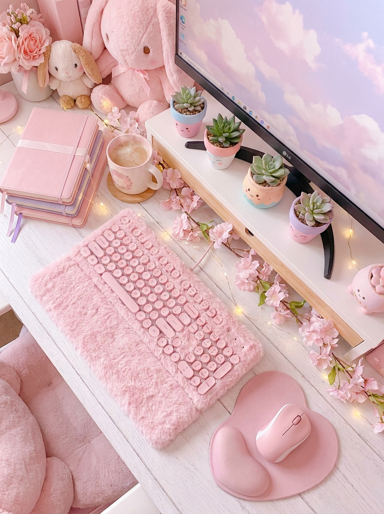
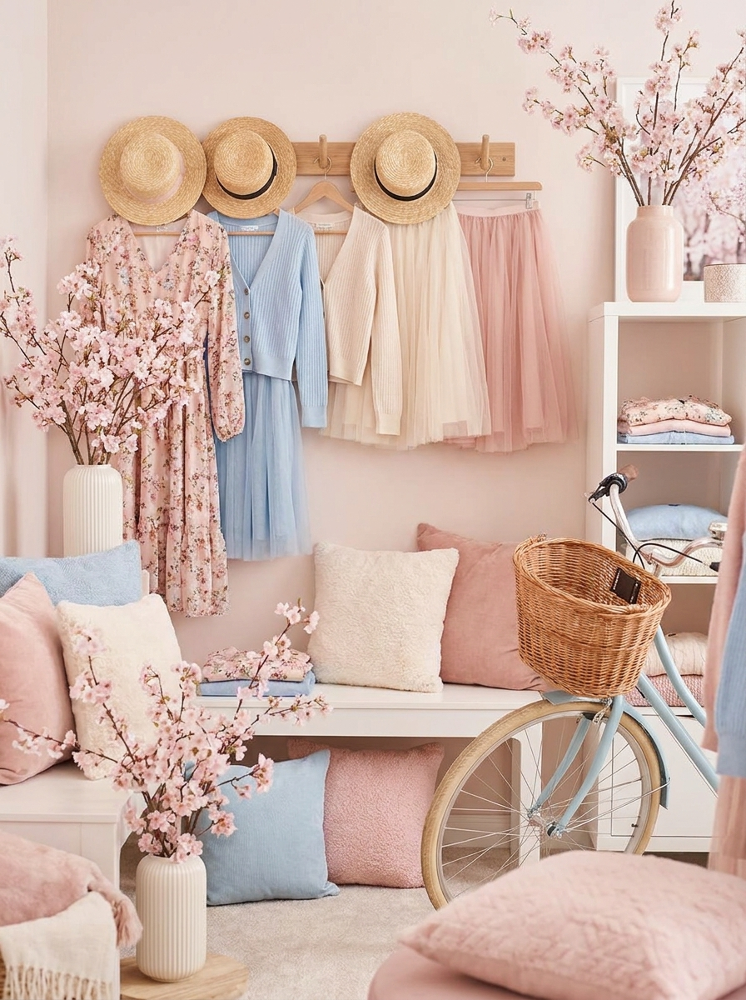
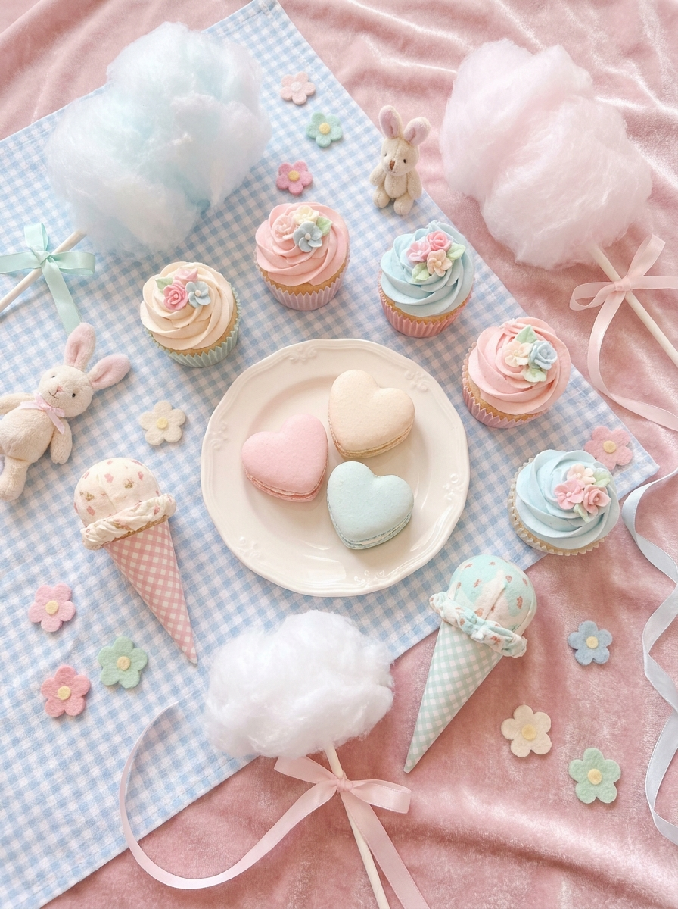

Top 5 Cute Comfort Finds
Gentle textures, soft colors, and cozy pieces that make everyday outfits feel sweeter.
Read More
Featured Blog Articles

Gentle textures, soft colors, and cozy pieces that make everyday outfits feel sweeter.
Read More
A calm beauty mood board built around blush tones, soft shine, and spring-ready simplicity.
Read More
Sweet styling details and soft room accents for a gentle Snowberry Belle atmosphere.
Read More
Pretty planning essentials and soft organization ideas for a calmer workspace.
Read More
Fresh seasonal styling with airy layers, blush palettes, and romantic silhouettes.
Read More
Easy outfit formulas and charming little details for warm, bright afternoons.
Read MoreExplore Categories